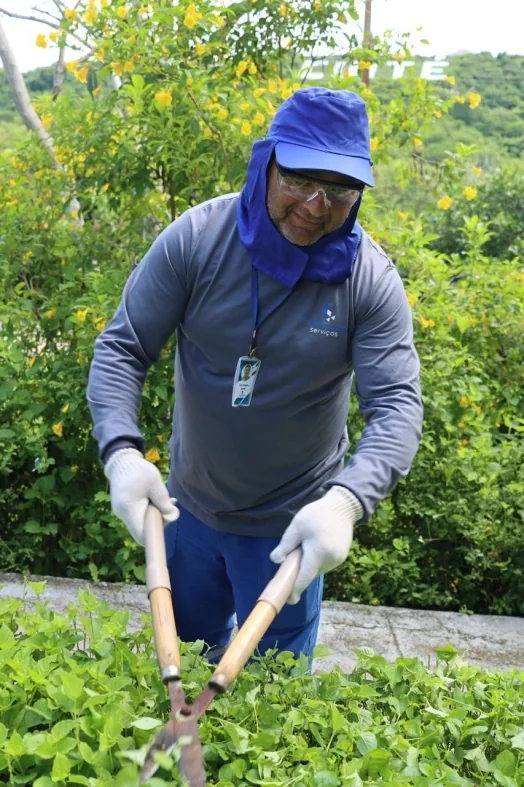
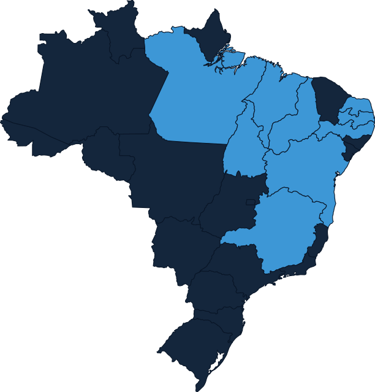
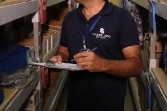
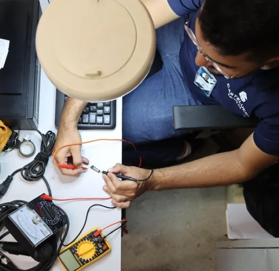

Mão de obra terceirizada que sua licitação pode confiar
Há mais de 10 anos fornecendo limpeza, recepção, portaria, jardinagem e apoio administrativo para órgãos públicos e empresas privadas em 9 estados, com documentação sempre em dia e equipe uniformizada.
Serviços terceirizados sob medida para o seu edital
Da limpeza à portaria, cada equipe sai uniformizada, treinada e com a documentação que a sua fiscalização de contrato exige.
Limpeza e Conservação
Equipes dedicadas para prédios públicos, condomínios e empresas, com insumos e escala de trabalho definidos em contrato.
Recepção
Profissionais treinados para o primeiro contato com o público em repartições, clínicas e escritórios.
Copeiragem
Atendimento de copa e eventos internos, com organização e discrição para o dia a dia da instituição.
Apoio Administrativo
Locação de mão de obra qualificada para rotinas administrativas e áreas técnicas.
Vigilância e Portaria Desarmada
Controle de acesso para condomínios e canteiros de obra, com foco em prevenção e registro de ocorrências.
Jardinagem
Manutenção de áreas verdes em canteiros, condomínios e sedes institucionais.
Motorista
Condutores habilitados para frota institucional e logística de curta e longa distância.
Ver todos os serviços
Detalhes de cada linha de serviço e como funciona a mobilização da equipe.
Explorar serviçosDocumentação sempre em dia para o seu edital
A Castelucci já atende contratos com Correios, Justiça Federal, Codevasf, Coren-MA e outros órgãos públicos. Isso significa habilitação jurídica, fiscal e trabalhista organizada tanto para participar quanto para continuar em conformidade durante toda a execução contratual.
Habilitação pronta
Certidões, regularidade fiscal e trabalhista organizadas para anexar ao edital.
Equipe compatível com o objeto
Dimensionamento de postos conforme o termo de referência, com uniforme e crachá.
Gestão de contrato dedicada
Ponto focal para fiscalização, relatórios mensais e substituição rápida de posto.

Presença em 9 estados do Norte, Nordeste e Sudeste
Times mobilizados e supervisionados à distância, com gestão centralizada em São Luís/MA.

Como conduzimos cada contrato
Entendimento das necessidades
Começamos pela leitura do termo de referência e das rotinas reais do seu órgão ou empresa.
Transparência e comunicação
Canal direto com o gestor do contrato durante toda a vigência, sem intermediários escondidos.
Aplicação de feedback
Ajustes de escala e reposição de posto tratados com agilidade a partir da sua avaliação.
Quem faz o serviço acontecer


Pronto para incluir a Castelucci no seu próximo edital?
Envie o objeto da licitação ou sua necessidade e retornamos com uma proposta de dimensionamento.